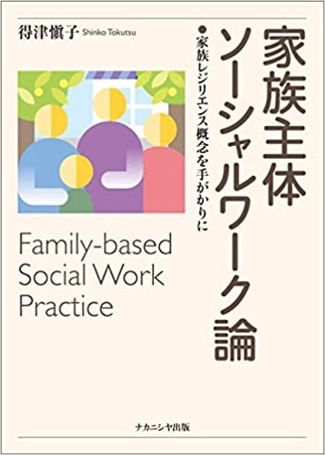
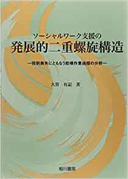
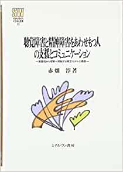
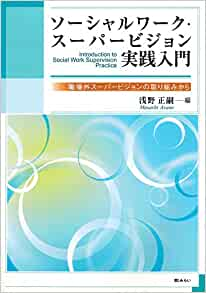
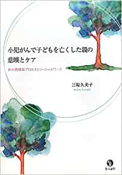
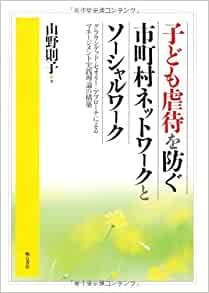

会員による研究の紹介 CONTENTS MENU 博士論文 書籍 ご入会•お問い合わせ ご入会や研究会へのお問い合わせはこちらへどうぞ メールでのお問い合わせ home 会員による研究の紹介 博士論文 論文と公開先の紹介 現在調整中です 書籍 会員の書籍  家族主体ソーシャルワーク論ー家族レリジエンス概念を手がかりに 得津愼子 ナカニシヤ出版 2018 うつ病休職者の集団認知行動療法に関する混合型研究 中村聡美 風間書房 2018 記憶と感情のエスノグラフィー 佐川佳南枝 ハーベスト社 2017 教員の異文化体験―異文化適応・人間的成長・教員としての成長― 鈴木京子 風間書房 2015 ソーシャルワーカーの「役割形成」プロセス－「違和感のある仕事」から組織活動への実践モデル－ 岩本操 中央法規 2015  ソーシャルワーク支援の発展的二重螺旋構造―役割喪失にともなう悲嘆作業過程の分析― 大賀有記 相川書房 2014  聴覚障害と精神障害をあわせもつ人の支援とコミュニケーション－困難性から理解へ帰結する概念モデルの構築― 赤畑淳 ミネルヴァ書房 2014 医療ソーシャルワーカーの成長への道のり～実践能力変容過程に関する質的研究 保正友子 相川書房 2013 認知症高齢者ソーシャルワーク－ソーシャルワーカーの困難性と対処行為 久松信夫 相川書房 2013 韓国における日本語教育必要論の史的展開 川先俊子 ひつじ書房 2013 被爆者を援助しつづける医療ソーシャルワーカーたち 黒岩晴子 本の泉社 2012 日英のフィールド調査から考える ：学校図書館における特別支援教育のあり方 松戸宏予 ミネルヴァ書房 2012  ソーシャルワーク・スーパービジョン実践入門－職場外スーパービジョンの取り組みから－ 浅野正嗣（編） （株）みらい 2011 夫婦間介護における適応過程 林葉子 日本評論社 2010 利用力/提供力を促進するケアマネジメント-支援困難なクライエントに対する実践活動の質的研究- 山井理恵 相川書房 2010  小児がんで子どもを亡くした親の悲嘆とケア-絆の再構築プロセスとソーシャルワーク- 三輪久美子 生活書院 2010 精神障害者へのソーシャルサポートの活用-当事者の「語り」からの分析- 長崎和則 ミネルヴァ書房 2010  子ども虐待を防ぐ市町村ネットワークとソーシャルワーク-グラウンデッド・セオリー・アプローチによるマネージメント実践理論の構築- 山野則子 明石書店 2009 健康マイノリティの発見 標美奈子 弘文堂 2008 ソーシャルワーク感覚 横山登志子 弘文堂 2008 ケア現場における心理臨床の質的研究－高齢者介護施設利用者の生活適応プロセス 小倉啓子 弘文堂 2007 生活再生に向けての支援と支援インフラ開発－グラウンデッド・セオリー・アプローチに基づく大学病院のソーシャルワーカーによる退院援助モデル化の試み－ 三毛美予子 相川書房 2003